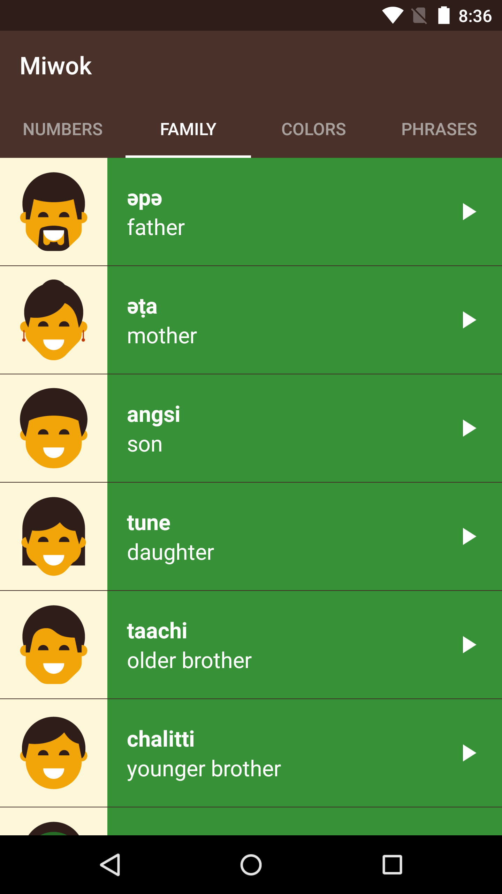

05. An Alternative Version of the App
An Alternative Version of the App
The app looks amazingly awesome and beautiful! It looks done! So why change it?
This can happen in app development teams. You build version 1 of an app. Then the team decides to do a design refresh, to have an even better user experience. Then you proceed to build version 2 of the app!
When you talk to any professional Android developer, they can tell you lots of stories of how the user interface for their app has evolved over the last months or even years.
As a developer, being able to refactor your code is an important skill to have. This means that the functionality of the app will remain the same, but visually the app will look differently. You can’t break any existing functionality (for example, you can’t lose the images or audio playback capabilities) when switching over to the new design. When you break something, and the user loses the ability to do something in the app compared to earlier versions, this is called regression.
To make sure that we don’t break anything, let’s move in small stages at a time. Try to make the app run on your device as often as possible. You don’t want to spend 5 days writing new code, and then realize that it doesn’t run on your device anymore.
Here are the new designs. We want to swipe between the word lists. This saves us an extra tap from having to open the vocab word lists. When we launch the app, we can immediately see the word lists.
 
New design above with tabs to swipe for different lists of words.
Save a copy of the current state of the app
IMPORTANT: Since we’re going to be moving major parts of the code around, definitely make a copy of the current version of your app. Save it as backup, so at least you have a working version of the app to fall back onto.
On your computer, search for the “AndroidStudioProjects” folder. There should be a “Miwok” folder with all of your code for this app inside of it. Make a copy of that folder and save it somewhere else.